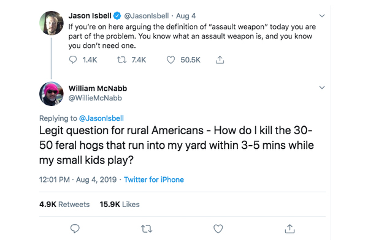
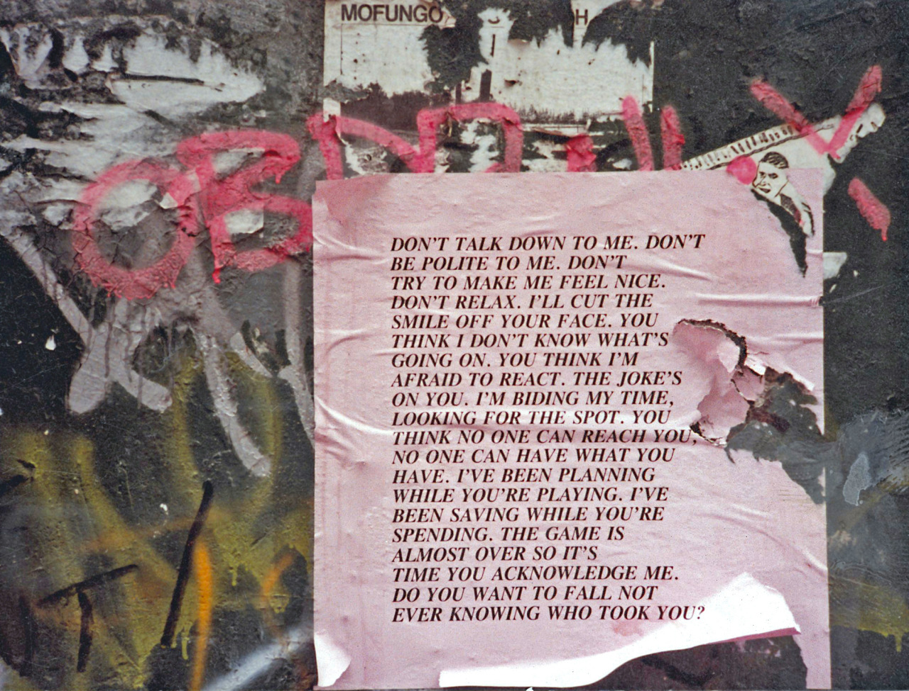
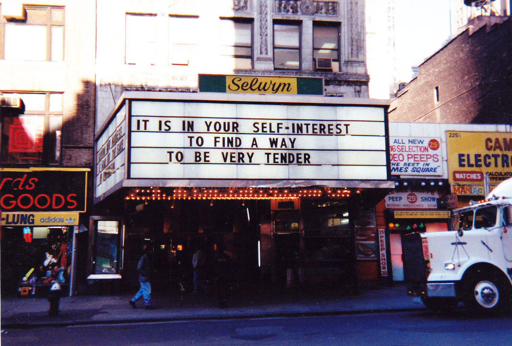
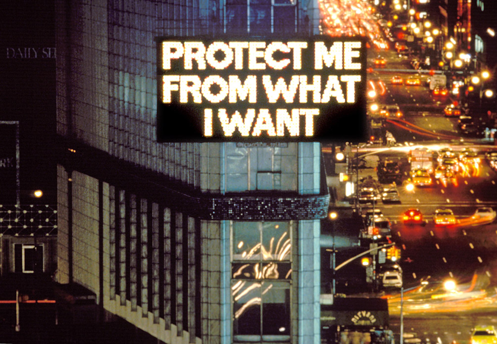
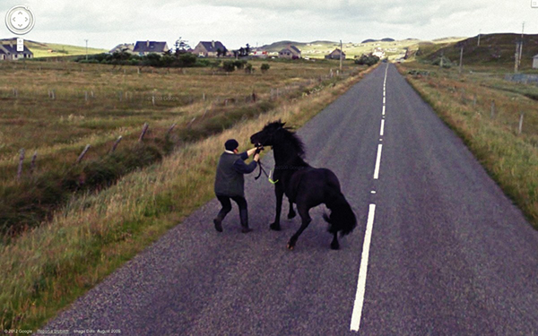
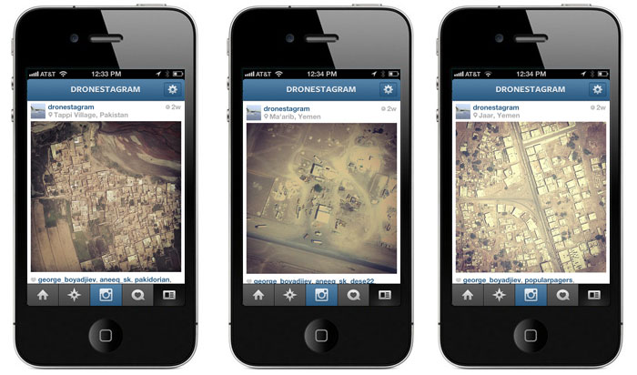

## Digital publishing
As designers, how can we create context and meaning on different online platforms?
Today we'll be working with existing texts and republishing them online, so that the focus can be purely on the act of publishing rather than creating content or writing code.
### What are some characteristics of digital publishing?
### Democratisation Anyone can produce and publish content. In fact, we're encouraged to form our thoughts in public, maintain our personal brand, create content and revenue for advertisers.
### Collaboration Google Docs, memes, remixes

30-50 feral hogs
### Formal constraints leading to emergent publishing practices [YouTube channels](https://www.youtube.com/watch?v=YKQiGbmIH8U&feature=emb_title), [TikTok memes](https://www.youtube.com/watch?v=WZP0bIkomLo), Twitter threads
### The Feed Constant, global, 24/7 updates, presented without context: cat videos next to drone strikes, election propaganda and memes
#### Scrolling through the feed, I can’t help but wonder: What am I supposed to think of all this? How am I supposed to think of all this? I imagine different parts of my brain lighting up in a pattern that doesn’t make sense, that forecloses any possible understanding. Many things in there seem important, but the sum total is nonsense, and it produces not understanding but a dull and stupefying dread. Jenny Odell, How to Do Nothing
### Context collapse In a limited group, a person is constantly adjusting their tone and presentation of self to fit into the social context. Online, this becomes impossible – behaviors and materials intended for a limited audience can suddenly clash with parts of the wider audience they actually receive.
### Instant updates Direct messages, notifications, broadcast lists
### Curated by influencers Resurgence of anti-algorithmic platforms and channels, like email newsletters and private Discords
#### With an unprecedented amount of available text, our problem is not needing to write more of it; instead, we must learn to negotiate the vast quantity that exists. How I make my way through this thicket of information—how I manage it, parse it, organize and distribute it—is what distinguishes my writing from yours. Kenneth Goldsmith, Uncreative Writing
Within this context, the designer has an important role to play: filtering, curating and framing content.
#### In the age of information overload, the ultimate luxury is meaning and context. Louis Rossetto, cofounder of WIRED
 Truisms, Jenny Holzer


[The Clock](https://youtu.be/C0ZLrW2dmAw?t=27), Christian Marclay
 [9-Eyes](https://9-eyes.com/), Jon Rafman
[All the Minutes](http://alltheminutes.com/), Moniker [Anagramatron](https://twitter.com/anagramatron), @cmyr
 [Dronestagram](https://www.instagram.com/dronestagram/?hl=en), James Bridle
[Mr Plimpton's Revenge](http://tinyurl.com/plimptonmap), Dinty W. Moore
## Step 0 Choose a text or image series whose copyright has expired, or that has a creative commons copyright. [Ubuweb](http://www.ubu.com/resources/), [Project Gutenberg](https://www.gutenberg.org/) and [Monoskop](https://monoskop.org/Monoskop) are good sources. (20 minutes)
If you're stuck, you can start with using some of Jenny Holzer's [Truisms.](https://mfx.dasburo.com/art/truisms.html)
## Step 1 Republish or process this text or image on two platforms, such as YouTube, Flickr, Vimeo, Vine, Instagram, Twitter, Tumblr, Facebook, Google Docs, Second Life, Google Earth, World of Warcraft, Yahoo Answers, Craigslist, etc… Document your work by taking screenshots. (60 minutes)
## Some considerations
What do you want to show/tell by republishing the content: telling stories, re-interpretation of the original content, making statements, showcasing certain aesthetics, visualizing relationships/networks, etc?
How will the reading of the contents be affected by the choice of platform?
How will you break up the contents, and connect the each part of the contents? Should each part of contents be shown one by one? Or should they be displayed in a sequence? How about the order?
How will you make aesthetic choices to conceptually reinforce or enhance to build the context: filters or other platform-specific features, typographic options, etc?
Thanks to [Clement Valla](http://clementvalla.com/) for the original version of this workshop.